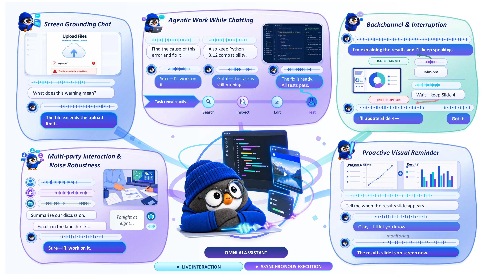
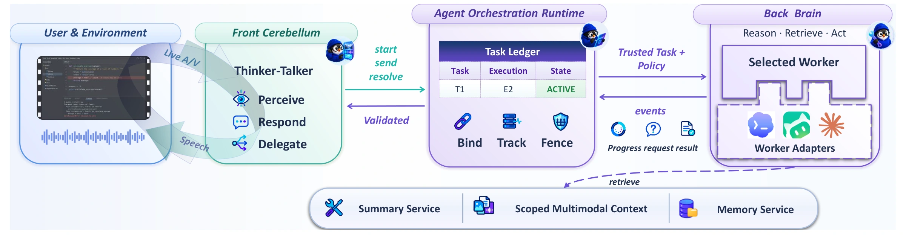
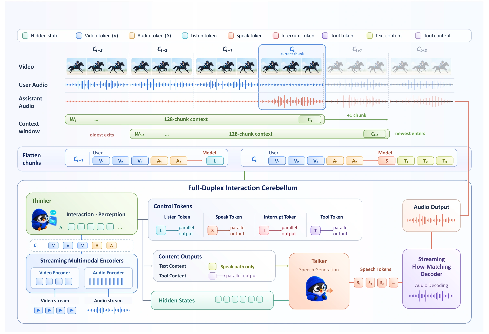
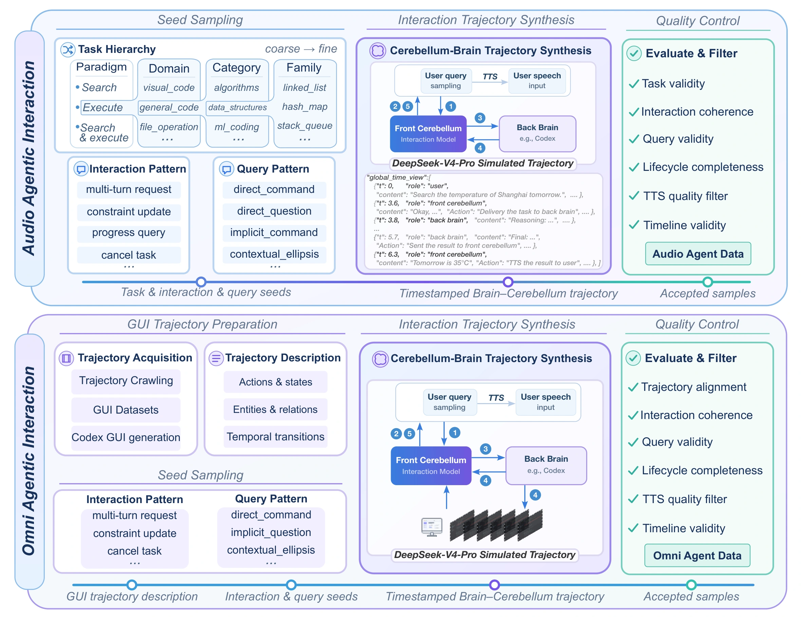

Gander：全模态交互智能体
与人协作，往往是一边交流，一边观察和行动。我们会在对方说话时附和或打断，也会随着场景变化和任务进展补充新的要求。要让智能体参与这样的协作，感知、对话与任务执行就需要协同进行。
Gander 将全模态感知、实时交互与智能体任务执行整合到统一框架中。它持续接收语音、视频和文本，结合用户的口头要求、眼前的画面与后续反馈推进任务，让交流贯穿任务执行过程。核心能力体现在三个方面：
- 理解不断变化的环境。 结合声音与画面理解场景，并在相关视觉事件出现时主动提醒。
- 把握自然交流的节奏。 在说话的同时听取用户反馈，区分附和、打断与无关干扰，决定继续讲述还是停下来倾听。
- 让任务执行与对话同步进行。 后台处理复杂任务时，用户仍可通过语音交流和共享画面补充要求、确认细节或查询进度。

全模态智能体交互
用户先请 Gander 创建一个 HTML 俄罗斯方块游戏，再补充点击重开的功能要求，并通过共享游戏画面提出暂停按钮的配色修改。语音指令与视觉反馈贯穿同一个任务，用户可以边查看结果，边继续提出调整。
视频暂时无法播放，请尝试直接打开。
直接打开视频共享屏幕上的文档，也可以直接成为任务的依据。用户展示一份技术报告，请 Gander 开展调研并整理总结。Gander 结合文档内容与口头要求发起后台任务，同时与用户确认当前材料和后续处理方向。
视频暂时无法播放，请尝试直接打开。
直接打开视频语音智能体交互
用户希望查找上海周边适合拍摄的地点，并比较各自的优缺点。Gander 接收语音要求后，发起后台信息搜集任务。用户在等待期间可以询问进展，Gander 查询任务状态并作出回应，随后给出地点建议。
视频暂时无法播放，请尝试直接打开。
直接打开视频音视频全双工对话
当用户请 Gander 解说一段旅行视频时，它会随着镜头切换，持续描述海边建筑、街巷和行人。解说内容跟随画面变化，让用户能够边看边听。
视频暂时无法播放，请尝试直接打开。
直接打开视频用户只需先提出“看到企鹅时告诉我”，Gander 就会持续观察视频，并在企鹅出现时主动提醒。这类交互要求模型记住先前的指令，并在后续画面中识别相应事件。
视频暂时无法播放，请尝试直接打开。
直接打开视频在版本发布、安全审计和风险讨论等场景中，Gander 持续接收说话内容，并逐步输出另一种语言的译文。以下分别展示中译英和英译中的同声传译过程。
视频暂时无法播放，请尝试直接打开。
直接打开视频视频暂时无法播放，请尝试直接打开。
直接打开视频自然的全双工对话，需要区分附和与打断。用户简短附和时，Gander 继续讲述；用户明确要求停下时，它则暂停回应，把话语权交还给用户。模型在说话的同时听取反馈，并根据用户意图调整回应方式。
视频暂时无法播放，请尝试直接打开。
直接打开视频理解一段视频，需要把当前画面与前面的情节联系起来。以下是项目提供的视频理解素材，保留了原始画面与声音。
视频暂时无法播放，请尝试直接打开。
直接打开视频抗干扰、多人对话与简易推理
在关于护照丢失的对话中，周围出现了无关人声，Gander 仍围绕当前用户的问题继续交流。这类场景要求模型结合谈话内容与上下文，判断哪些话语是对自己说的，避免被无关声音带离当前话题。
视频暂时无法播放，请尝试直接打开。
直接打开视频两人讨论出游计划后，用户询问其中一人提到的出发时间。Gander 根据刚才的对话作答，将问题与相应说话人的表述对应起来。
视频暂时无法播放，请尝试直接打开。
直接打开视频“一直开着冰箱门，能让密闭的房间降温吗？”面对这个日常物理问题，Gander 通过语音说明其中的道理，将推理过程组织成便于听懂的解释。
视频暂时无法播放，请尝试直接打开。
直接打开视频小脑—大脑协作架构
Gander 采用小脑—大脑协作架构，由三个组件分工配合。前端小脑持续接收音视频输入，负责实时对话和交互决策；后端大脑负责复杂推理、工具调用与耗时较长的任务；智能体编排运行时负责管理任务状态、协调执行，并传递进度与结果。后端大脑支持替换，接入时无需额外训练。

前端通过 task_start 发起后台任务，通过 task_send 补充要求或查询进度，通过 task_resolve 表达取消、授权等任务操作。编排运行时负责将这些指令落实到具体任务，并把执行进展与结果传回前端。这样，用户在任务进行期间仍可补充条件、调整要求，持续参与整个过程。
流式 Thinker–Talker 建模
前端小脑采用流式 Thinker–Talker 架构，以一秒为一个处理单元。每个单元先接收音视频输入，以及当前可用的文本或工具返回结果，再决定聆听、说话、打断或发起结构化工具调用，并按需生成文本。模型保留最近 128 个时间块，形成约两分钟的滑动上下文，使后续回应能够参考新到达的信息。

Thinker 负责生成文本和交互动作，Talker 根据文本及隐藏状态生成离散语音单元，再由流式解码器合成语音波形。在训练格式中，每个说话单元最多包含八个文本 token，与 50 个 S3 语音 token 对齐。这样的分工使模型能够持续接收输入，同时逐步生成语音。
交互数据构建
Gander 的训练语料约有 270 万条样本，涵盖语音交互、音视频交互、智能体交互，以及抗干扰与负样本四类。训练既关注回答内容，也关注何时接话、如何响应视觉事件，以及怎样处理任务状态的变化。模型由此学习在持续交流中聆听、回应，并与后台任务协调。
语音交互：学习区分打断与附和
语音数据涵盖日常对话、指令遵循、问答、全双工交互与同声传译。其中，InteractionSpeech 包含 26.08 万段对话，通过主题种子生成或改写已有对话构建，并明确标注打断与附和。用户话语通过 TTS 合成为语音；助手回复保留为文本，并在时间线上标记其预计时长。每轮对话的起始时间、持续时长与重叠区间，为模型学习交互时机提供依据。最后，规则过滤与模型评审共同检查对话是否连贯、交互是否合理。
音视频交互：让回应跟上画面变化
约 110 万条音视频样本来自 JoyAI-VL、LiveCC 和 Streamo，覆盖流式视频问答、视频解说与视觉主动回应。构建过程先筛选样本质量、修正时间对齐，再按平均每秒约 8 个 token 的速率调整回复长度，并将用户话语合成为语音。这些样本帮助模型持续跟踪画面中的事件与状态变化，并根据当前已观察到的信息作出回应。
智能体交互：覆盖任务从发起到结束的全过程
智能体数据包括 32.02 万条语音智能体交互、3.6 万条全模态智能体交互，以及 0.34 万条工具辅助推理样本。语音智能体数据从分层抽取的任务种子出发，结合不同的提问与交互方式合成。全模态智能体数据则利用采集的交互记录、现有 GUI 数据集和 Codex 生成的 GUI 轨迹，提取结构化的环境与任务状态描述。DeepSeek-V4-Pro 据此生成带时间戳的用户、小脑与大脑交互轨迹，覆盖任务发起、追加要求、更新约束、澄清、进度查询、取消和结果交付，再经过一致性检查与质量筛选。

抗干扰与负样本：学会在适当的时候保持安静
真实环境中会出现无关画面、背景噪声、重叠语音，也可能有多人同时交流。相应的训练数据覆盖这些情境，也包含没有用户指令的环境输入。其中，无关视频负样本通过将网络视频与不相关的指令配对构建；抗干扰和多人交互样本则选自高质量 Hy-Realtime 生产数据。模型需要学会忽略无关事件，在没有有效请求时保持安静，并判断是谁在说话、话语是否面向助手。
交互、语音对话与全模态理解评估
Full-Duplex-Bench v3 从交互时机和任务完成情况两个方面评估全双工能力。在全部 100 个场景中，Gander 的适时接话率为 100.0%，提前抢话率为 8.0%；严格任务成功指标 Pass@1 为 0.400，仍低于表中的六个基线。仅以用户转写文本驱动后端大脑时，Pass@1 为 0.520，但这一设置绕过了前端小脑与音频处理，无法评估交互时机。交互表现与任务准确率需要分别考察。评估中的后端大脑使用未经微调的 GPT-5.6。
| 模型 | Pass@1 ↑ | 适时接话率 % ↑ | 提前抢话率 % ↓ |
|---|---|---|---|
| GPT-Realtime | 0.600 | 96.0 | 13.5 |
| Gemini Live 3.1 | 0.540 | 78.0 | 19.2 |
| Cascaded (Whisper → GPT-4o → TTS) | 0.450 | 100.0 | 33.0 |
| Grok | 0.430 | 94.0 | 25.5 |
| Ultravox v0.7 | 0.410 | 96.0 | 47.9 |
| Gemini Live 2.5 | 0.490 | 92.0 | 14.1 |
| Gander | 0.400 | 100.0 | 8.0 |
| Gander（仅后端大脑）† | 0.520 | — | — |
Pass@1 的取值范围为 0–1，其余两项以百分比表示。↑ 越高越好，↓ 越低越好。提前抢话率统计模型在用户说完之前开始回应的比例，并非响应用户打断的速度。† “仅后端大脑”为文本驱动的参考结果，应与级联流水线对照；由于没有音频时间线，交互指标无法测量，以“—”表示。Gander 主结果来自包含语音合成与 ASR 的端到端系统。
语音对话评估使用 SpokenQA 与 VoiceBench 的 2,052 条语音样本，语音直接输入 Thinker，并对输出的文本回答评分。Gander 在 Llama Questions、Web Questions、AlpacaEval 和 SD-QA 上分别得到 75.60%、59.30%、3.96/5 和 46.84%。论文表 4 按交互方式将模型分为轮次式与全双工流式两组：Gander 在全双工组的前两项指标上得分最高，后两项排名第二。比较主要在组内进行，因为流式模型还受到实时处理和交互决策的约束。这 2,052 条样本均未调用后端大脑，成绩反映的是前端小脑的能力。
音视频理解评估由前端直接输出文本答案。Gander 在 WorldSense 的 3,172 道题和 Daily-Omni 的 1,197 道题上，准确率分别为 49.62% 和 78.53%，均低于其初始化模型。另一方面，联合使用音频和视频优于表现更好的单一模态输入，其中 Daily-Omni 的融合增益为 19.13 个百分点。理解准确率与多模态融合收益反映不同方面的表现，需要分别解读。
| 基准 | 音频 + 视频 % | 仅视频 % | 仅音频 % | 融合增益（百分点） |
|---|---|---|---|---|
| WorldSense | 49.62 | 44.61 | 43.32 | +5.01 |
| Daily-Omni | 78.53 | 59.40 | 57.81 | +19.13 |
| 总体 | 57.54 | 48.66 | 47.29 | +8.88 |
融合增益 = 音视频联合输入准确率 − max(仅视频准确率, 仅音频准确率)，单位为百分点。总体准确率合并两个基准的 4,369 道题计算。模型由前端直接输出文本答案，不使用语音合成、ASR 或后端大脑。